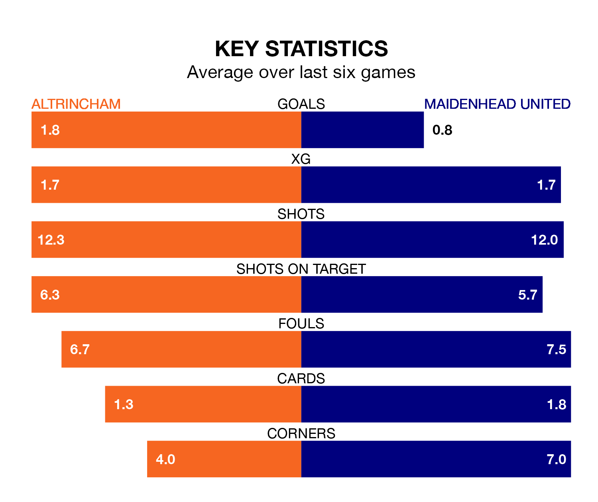

Maidenhead United make the journey to the J. Davidson Stadium to play Altrincham on Saturday looking to pick up points to end their four-game losing streak.
Maidenhead's struggles have left them with just four points from their last six National League matches, while their opponents have earned nine from a possible 18.
With 35 goals in 35 games so far this season, Maidenhead are the league's third-lowest scorers with 1.0 goals per game. But they are conceding fewer than average too, letting in 46 goals at a rate of 1.3 per game.
Altrincham, meanwhile, are above average scorers, with 1.8 goals per game, compared to a league average of 1.5. They have conceded 1.3 goals per game.
In the last 10 years, Altrincham and Maidenhead have played each other on seven occasions. Altrincham won five of them, Maidenhead one, and they drew once.
On average, Robins scored 1.3 goals and Maidenhead 0.6 in those matches.
Their last meeting was on September 26, when Altrincham won 1-0 away.
United are 18th in the table after 35 games, of which they have won nine and drawn 12, earning 39 points.
Robins are 10 places ahead of the visitors in eighth, with 14 wins and 10 draws putting them on 52 points.
Altrincham's last match was on Tuesday, a 3-2 loss against Hartlepool United, with Dior Angus and Matthew Kosylo getting the goals for Robins.
Maidenhead lost 2-1 against Southend United last time out, also on Tuesday, with Kevin Adom Lokko on the scoresheet.
Updated: 10:08 (UTC), 23/02/24